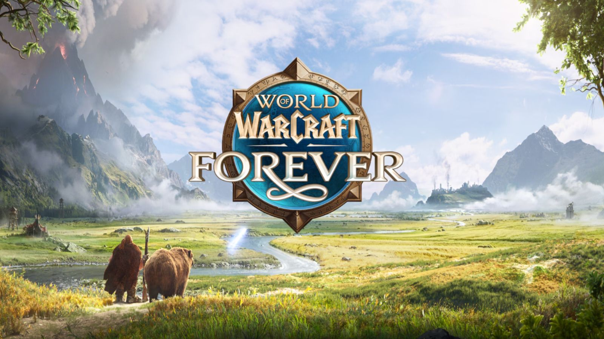

Notes de lancement : tout ce qui change
3 novembre 2026
Deux jours avant la sortie, Blizzard a publié ses notes de lancement : 223 changements depuis la mise à jour de la bêta du 15 octobre. Presque toutes les classes sont renforcées, avec des monstres de haut niveau plus résistants en contrepartie. Voici l'essentiel, classe par classe.

Les classes
 Guerrier
Guerrier
Posture défensive bien plus menaçante (80 % au lieu de 30 %), Défi jusqu'à 20 %. Heurtoir toutes les 15 s. Rafale passe à 3 rangs (jusqu'à 30 % de vitesse d'attaque) et Soif de sang demande désormais Souhait mortel. Nouveaux talents : Reckless Swings et Improved Whirlwind.
 Paladin
Paladin
Fureur vertueuse dès le niveau 10 et +33 % de menace. Vengeance se cumule 5 fois. Bénédiction de salut et Salut collectif disparaissent, comme plusieurs talents (Improved Seal of Fury, Instrument of Law). Nouveaux talents : Oath of Light, Boundless Light, Shieldsworn, Stoicism et Turn Evil ; Twist of Light devient Unsealed Wrath.
 Chasseur
Chasseur
Tous les pièges partagent une recharge de 30 s. Visée, Tir de sniper, Tir des arcanes et Morsure de serpent frappent plus fort. Aspect du faucon et Aura de précision donnent plus de puissance d'attaque. La Marque du chasseur de rang 4 est corrigée.
 Voleur
Voleur
Gros bonus : poisons deux fois plus efficaces, Mutilation à 90 % de l'arme. Nouveaux sorts Aplomb (niveau 18) et Surin (niveau 24). Nouveaux talents : Composure, Flash of Steel, Quick Getaway, Boot Knife, Death Mark, Blood Splatter ; Murder, Quietus et Cutthroat disparaissent.
 Prêtre
Prêtre
Holy Binding remplace Binding Heal : vos Soins rapides sur un allié vous soignent aussi de 50 %. Mot de l'ombre : Mort coûte 30 % de vos PV si la cible survit. Étreinte vampirique ne fait plus de critiques. Plusieurs bugs corrigés.
 Chaman
Chaman
Éclair +80 % au rang max, horions remis aux valeurs de Classic, Surcharge de foudre jusqu'à 30 %. Explosion de lave disparaît, remplacée par Call of Thunder ; Elemental Mastery devient Lightning Mastery. Frappe-tempête à 150 % de l'arme toutes les 6 s. Remous : 12 s de recharge et plus de soin immédiat.
 Mage
Mage
Javelot de glace à 300 % sur cible gelée. Barrière de glace : +15 % de dégâts de givre. Explosion des arcanes coûte moins cher par cumul. Masse critique passe à 3 rangs. Perce-glace, Frost Blast et Focalisation des arcanes disparaissent (Précision les remplace).
 Démoniste
Démoniste
Wrack bien plus fort (86 dégâts par seconde au niveau 60). Shadow and Flame jusqu'à 20 %. Les démons ont moins de PV par point d'Endurance (2 au lieu de 7,5). Drain d'âme donne moins souvent un fragment. Amplifier la malédiction marche sur Malédiction d'épuisement et Bane of Agony.
 Druide
Druide
Gros bonus en farouche : menace des formes d'ours à 115 %, Lambeau 200 %, Griffe 140 %, Ravager 435 %, saignements +25 %. Feu stellaire +40 %. Berserk disparaît (Primal Bite à la place), Lacérer devient un talent. Nouveaux : Aplomb, Predatory Discipline et Bloom.
Le calculateur de talents et les builds des guides de spé sont déjà à jour de ce patch (1.60.1.70753) ; les builds du paladin, du druide farouche et restauration et du prêtre ont été adaptés.
Races
- Troll : Berserker dure 15 s au lieu de 10 s.
- Mort-vivant : Cannibalisme utilisable même sous immunité physique, Toucher de la tombe corrigé.
- Caractéristiques de base corrigées pour toutes les races (le tauren guerrier a maintenant +5 en Force par rapport à l'humain).
- Les satyres comptent désormais comme des démons.
Détails sur la page Races.
Quêtes et leveling
- Expérience, prérequis et niveaux de quêtes revus dans de nombreuses zones ; les objectifs ont maintenant une info-bulle.
- Détruire un objet de quête abandonne la quête, et inversement.
- Les monstres réapparaissent plus vite dans les zones de bas niveau, surtout au départ, pour absorber la foule du lancement.
- Un gros équilibrage est prévu quand assez de joueurs auront dépassé le niveau 30.
Coût des sorts
Les prix des maîtres de classe sont harmonisés : apprendre tous les sorts du niveau 1 à 60 coûte environ 206 po, quelle que soit la classe. Pour le démoniste, le prix des grimoires de ses démons est déduit.
Héritage, JcJ et interface
- Héritage : la Réplique du fusil de Forgefer s'utilise sur les alliés qui en ont déjà un ; le malus de déserteur passe à 40 s et l'étourdissement à 2,5 s.
- Îles des Sombrelances : lâcher le drapeau ne vous pénalise plus.
- Manette entièrement prise en charge (déplacement, sorts, interface).
- Les sorts appris ne s'ajoutent plus seuls aux barres d'action, et les sacs ramassés ne s'équipent plus tout seuls.
Source : notes de lancement de Blizzard du 2 novembre 2026, d'après le résumé de Kami Labs. Noms des talents en anglais, comme dans le calculateur.